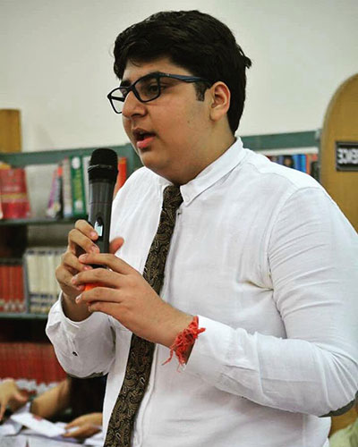

"In a world full of contentions and ambiguities, opportunities are available as a cherry on the top"
I, Madhav Setia, extend a warm welcome to all the delegates as the Chairperson of the All India Political Parties Meet. Iam a class 12 passout and have been an "Artsperson" throughtout my childhood and High School. History and Political Science have been my strong points as far as I can recount. I plan to go the UK for my Graduation. I started doing MUNs in class 8 and the past 6 years have seen me doing over 40 MUN Conferences, over 10 of which have been International including Zurich MUN, HMUN China and The Ivy League MUN and many more. Currently I am also serving as the Secretary General for The Renaissance Model UN Conference 2017.
I believe the circuit today has become more commercialized and debate is gradually eradicating. I want to bring back the level of Discussion to the Conferences today and make them more Conventionally focused and interestingly channeled. Having served as the Chairperson of AIPPMs many times prior, I have only one motto - serious Debate. At CISA MUN, I expect the delegates to be well researched and focused. The committee I am chairing, Historic AIPPM is unconventional, yet difficult. Being set up in 2002, it's topic area summary (agenda) will require weeks of good research and much participation in the Committee. Delegates must also remember that they have to be well prepared for the crisis, which forms an integral part of the committee.
There is a new trend in the circuit to initiate and innovate the MUNs with Indian committees. AIPPMs have been flooding the circuit since 2012 and since CISA is all about uniqueness and innovation, we have gone ahead with a more centralized and focused form of AIPPMs, the Historic AIPPM. Set in the backdrop of the 2002 Gujarat riots, which brought much controversy to our country and specially, our current PM Mr. Narendra Modi (the then CM of Gujarat) to the limelight for all the negative reasons. Delegates will be expected to represent their portfolios efficiently and effectively. The committee will be extremely interesting but at the same time serious too. All in all I tend to restore the quality of MUNs for all the good reasons. I am looking forward to a great debate at CISAMUN 2017 and wish to give all the delegates an enriching experience. I wish Vansh and his team all the best for the Conference! Please feel free to contact me anytime at madhavsetia@rocketmail.com or +919988443587.
Regards,
Madhav Setia
Chairperson AIPPM